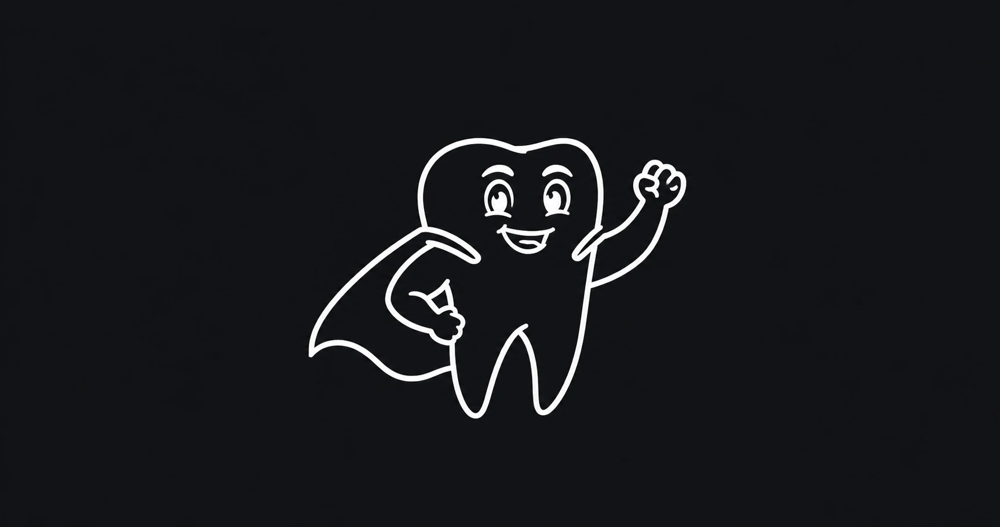

Research & UX design · DentOS
Brushy
A concept app that turns tooth brushing into a game for children. I did the research (with 70 primary-school pupils) and designed the app in Figma.
I build software for systems that can’t afford to stop.
Third-year Computer Science student. This summer at CROZ I helped build a z/OS application in COBOL, CICS and Db2, owned its entire database, and helped move its delivery from the mainframe to Git.
01Featured work
A darts tournament and league system, built by our team during my internship at CROZ. CICS runs the transactions and screens, COBOL holds the business logic, Db2 stores the players, matches and leagues, and JCL handles builds and batch work.
DZL010 D A R T Z OCT 2026 LEAGUE STANDINGS LEAGUE . : SLAVONIA AUTUMN LEAGUE 2026 ROUND 09 OF 14 POS PLAYER P W L LEGS +/- AVG PTS --- ------------------ -- -- -- ----- --- ----- --- 1 KOVAC, LUKA 9 8 1 48-21 +27 81.36 16 2 MATIC, ANA 9 7 2 45-26 +19 78.02 14 3 BABIC, TOMISLAV 9 6 3 41-30 +11 74.55 12 4 JURIC, PETRA 9 5 4 38-34 +4 72.90 10 5 NOVAK, DARIO 9 4 5 35-37 -2 70.13 8 6 PAVLOVIC, IVA 9 2 7 27-43 -16 66.48 4 DZL011I 6 PLAYERS LISTED. STANDINGS AS OF ROUND 09. COMMAND ===>
A recreation for this site. Names and numbers are made up. Try the keys.
My role
Every program in the application read from and wrote to it.
Created the data the developers used to test their programs.
Kept the database consistent and maintained the environment the team worked in.
Modernisation
After DartZ was finished, we changed how it’s built and delivered, following IBM Dependency Based Build. The source of truth moved off the mainframe into Git, and a pipeline now delivers every committed change to z/OS automatically.
02Experience
Three very different jobs. In each one, people relied on me to get things right, and to fix problems fast.
03Certifications
From hands-on z/OS challenges to hardware, security and build tooling. Every badge is verifiable on Credly.
Hands-on z/OS challenges, from the first login to the full advanced track.
Six foundations badges across hardware, system, security and application programming.
04Other work
Before mainframe, I ran web projects for clients on my own, from the first call to launch. That’s where I learned to work out what people actually need, and to deliver it on time.

Research & UX design · DentOS
A concept app that turns tooth brushing into a game for children. I did the research (with 70 primary-school pupils) and designed the app in Figma.
Website redesign
Rebuilt a children’s choir’s outdated website from scratch on WordPress, then trained the staff to run it on their own.

Event website
Website for a gaming and Web3 conference, presenting 100+ speakers and sponsors on a fixed launch deadline.

Landing page
Landing page for a LinkedIn personal-branding agency: services, results and a clear path to booking a call.

Community website
A central hub for a web-development Instagram community, bringing scattered information together in one place.

05Education
Education
BSc in Computer Science · Software Engineering track · 3rd year
Computer Science
Achievements
06Contact
I’m looking for a student job or a 2027 internship in mainframe or enterprise development. I can work remotely, or on-site in Osijek.
marin.sabo.contact@gmail.com